Unitary Operators
The paradigm of computation as a physical process requires that QC can -- in principle -- be described by the same means as any other physical reality, which, for the field of quantum physics, is the mathematical formalism of Hilbert space operator algebra.
The moral equivalent in QC to partial recursive functions, the mathematical concept of classical computability, are unitary operators. As every classically computable problem can be reformulated as calculating the value of a partial recursive function, each quantum computation must have a corresponding unitary operator.
The mathematical description of an operator is inherently declarative; the actual implementation for a certain quantum architecture i.e. the algorithmic decomposition into elementary operations, is beyond the scope of this formalism. Also, since the mathematical model treats unitary operators as black boxes, no complexity measure is provided.
Quantum Turing Machines
In analogy to the classic Turing Machine (TM) several propositions of Quantum Turing Machines (QTM), as a model of a universal quantum computer have been made.
The complete machine-state 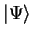 is thereby given by a superposition of base-states 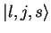, where 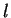 is the inner state of the head, the head position and the binary representation of the tape-content. To keep 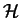 separable, the (infinite) bit-string has to meet the zero tail state condition i.e. only a finite number of bits with 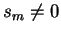 are allowed.
The quantum analogon to the transition function of a classic probabilistic TM is the step operator 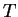 , which has to be unitary to allow for the existence of a corresponding Hamiltonian and meet locality conditions for the effected tape-qubit, as well as for head movement.
QTMs provide a measure for execution times, but -- as with the classical TM -- finding an appropriate step operator can be very hard and runtime-complexity (i.e. the number of applications of in relation to the problem size) remains an issue. Outside quantum complexity theory, QTMs are of minor importance.
Quantum Circuits
Quantum circuits are the QC equivalent to classical boolean feed-forward networks, with one major difference: since all quantum computations have to be unitary,
all quantum circuits can be evaluated in both directions (as with classical reversible logic). Quantum circuits are composed of elementary gates and operate on
qubits, thus  where
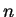
is the (fixed) number of qubits. The "wiring" between the gates thereby corresponds to unitary reordering operators
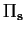.
where
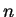
is the (fixed) number of qubits. The "wiring" between the gates thereby corresponds to unitary reordering operators
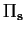.
In comparison with classical boolean feed-forward networks, this imposes the following restrictions:
- Only -to- networks are allowed i.e. the total number of inputs has to match the total number of outputs.
- Only -to- gates are allowed.
-
No forking of inputs is allowed. This is directly related to the fact that qubits can't be copied, i.e. that there exists no unitary operation
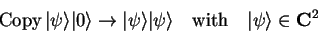which can turn a general qubit-state into a product state of itself.
-
No "dead ends" are allowed. Again, this is because the erasure of a qubit
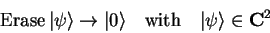is not a unitary operation.
To allow for implementation of all possible unitary transformations, a universal set of elementary gates must be available, out of which composed gates can be constructed. Each 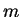-qubit gate 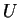 thereby describes up to 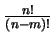 different unitary transformations 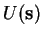, depending on the wiring of the inputs.
As opposed to the operator formalism, the gate-notation is an inherently constructive method and -- other than QTMs -- the complexity of the problem is directly reflected in the number of gates necessary to implement it.
Quantum Programming Languages
When it comes to programming and the design of non-classic algorithms, we can look at the mathematical description as the specification and quantum circuits as the assembly language of QC.
Just as classical programming languages, quantum programming languages (QPLs) provide a constructive means to specify the sequence of elementary operators, while allowing nested levels of abstraction.
Flow Control
In it's simplest form, a quantum algorithm merely consists of a unitary transformation and a subsequent measurement of the resulting state. This would e.g. be the case, if a quantum computer is used to emulate the behavior of another quantum system.
For more "traditional" computational tasks, as e.g. searching or mathematical calculations, efficient quantum implementations often have the form of probabilistic algorithms. The figure following shows the basic outline of a probabilistic non-classical algorithm with a simple evaluation loop.
More complex quantum algorithms can also include classical random numbers, partial measurements, nested evaluation loops and multiple termination conditions: The actual quantum operations as resetting of the machine state, unitary transformations and measurements are embedded into a classical flow-control framework.
A formal way to describe the classical control structure, is to consider quantum operations as special statements within a classical procedural language. Therefor any QPL also has to be a universal programming language.
Operator Specification
Classical procedural languages provide different levels of abstraction by allowing the grouping of primitives into reusable subroutines (procedures) which can operate on different data (parameters, references) and use temporally allocated memory (local variables).
If this concept is to be used for the definition of unitary operators, then language elements have to be provided which account for the reversibility of unitary transformation and the non-local nature of entangled quantum bits.
- Mathematical Semantics:
The effect of an operator has to be uniform and has to be restricted to the quantum machine state i.e.the use of an operator must not interfere with
the classical state of the machine.
This means that the implementation of an operator must only depend on its parameters and must not produce any side-effects. This esp. excludes the use of global variables and the use of non-deterministic functions (such as a random numbers).
- Unitarity: It has to be assured that operators are restricted to unitary transformation. This excludes non-unitary quantum operations such as measurement.
- Reversibility: Since for any unitary operator, there exists an inverse adjoint operator, a QPL should provide means to execute operators in reverse.
- Symbolic Registers: An operator must be able to operate on any set of qubits. This requires the ability to define symbolic quantum registers.